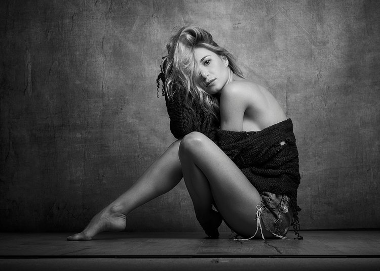

DANIEL GOOD
FOTOGRAFIE
Fotos benötigen Aufmerksamkeit
es sind die einfachen dinge, die das leben besonders machen. ich möchte meine leidenschaft mit euch teilen, euch anstecken und inspirieren. denn fotografie verbindet und bringt menschen zusammen. begleitet mich auf diesem abenteuer
Explore.
Create.
Auf der ständigen Suche nach Wegen, um der Kreativität neuen Ausdruck zu verleihen. Wohin diese Wege führen ist noch ungewiss. Näher zum Menschen hin, zur Natur, zum Vermitteln nicht nur rein plakativer Schönheit, sondern sensibler Stimmungsbilder.
Constantly on the search for new ways to provide creativity with new forms of expression. Where these paths lead to is still unknown. Closer to the individual, to nature, to portraying not just pure striking beauty, but rather more moving, contemplative images.
Ich muss meine Ideen umsetzen, wann immer sie mir in den Sinn kommen. Die Arbeit an freien Projekten ist für mich wichtig. Es ist wie eine Fingerübung zwischen Auftragsarbeiten und einem Realitätsvergleich zwischen Jobs.
Die Fotografie soll meine emotionale Sichtweise zu der abgelichteten Szene ausdrücken. Somit kann ich mein subjektives Empfinden mit dem Betrachter teilen. Die Fine Art Photography steht somit im Gegensatz zur Doku- und Pressefotografie, bei der in den Fotografien die objektive Realität dargestellt werden soll.